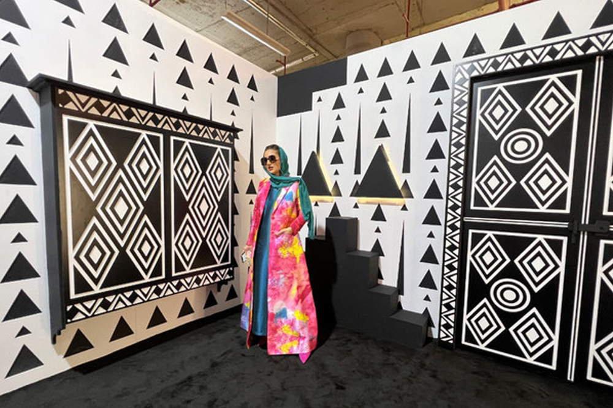

Tech meets tradition in Dhahran, a city where the past and future blend seamlessly. This dynamic fusion is evident in many aspects of daily life, from the use of cutting-edge technology in oil exploration to the preservation of the rich cultural heritage of the region. At the heart of this transformation is an ambitious initiative: The Digital Folklore Project, a pioneering effort to preserve, celebrate, and share the stories, traditions, and art of Dhahran and its surrounding areas through digital means. The project’s goal is to bridge the generational gap between those who live in a world dominated by digital tools and those who still hold close to the traditional ways of life that have shaped this region for centuries. The concept for the Digital Folklore Project emerged in the early 2020s, as local cultural leaders and tech enthusiasts began to recognize a growing concern. The rapid pace of modernization was threatening the rich cultural heritage that had long been passed down orally—stories of Bedouin life, traditional music, folk dances, and local craftsmanship. These cultural expressions were at risk of fading away in a world where globalization was sweeping through at an unprecedented pace, and technology had reshaped everyday life. At first glance, the world of tech and tradition may seem vastly different, but the two are more interconnected than one might think. For many of the elders in Dhahran, the digital world may feel alien—an overwhelming sea of screens and codes—but the Digital Folklore Project aimed to change that. It began with a simple question: *How can modern technology preserve the traditional culture of the region and make it accessible to future generations?* The answer was clear: digitization. With the help of historians, anthropologists, and local cultural leaders, a team was assembled to explore ways to record and archive the folklore that had shaped the community's identity. The project was initially a grassroots effort, with volunteers traveling to various villages around Dhahran to collect oral histories, songs, and stories. These were then recorded in digital formats, from video clips to audio files, capturing the nuances of each tale, the expressions of the storytellers, and the authenticity of the performances. The team also began to photograph and catalog traditional artifacts, from handwoven carpets to intricately crafted jewelry, all of which were imbued with stories of the people who made them. However, the scope of the project quickly expanded as local universities and tech companies took notice. Researchers from King Fahd University of Petroleum and Minerals (KFUPM), based in Dhahran, lent their expertise in developing software and platforms to store, catalog, and share these stories. The collaboration between academics, technologists, and cultural experts led to the creation of a comprehensive, user-friendly digital archive. This archive would not only store the stories but also provide rich, interactive ways for users to engage with the content. The first phase of the Digital Folklore Project focused on creating a platform for the public to access these stories. What began as a simple database of oral narratives, poetry, and songs grew into an interactive website, where visitors could hear the voices of the storytellers, watch performances of folk dances, and explore the history behind each piece. The stories were categorized by themes—such as love, heroism, loss, and survival—and were enriched with digital exhibits, including photographs of traditional rituals, historical contexts, and even animated videos that brought the tales to life in a modern format. One of the most exciting aspects of the project was the integration of augmented reality (AR) and virtual reality (VR). These cutting-edge technologies allowed users to experience traditional events, such as the annual camel races or a traditional wedding ceremony, from the comfort of their own homes. With VR headsets, users could immerse themselves in these cultural practices, experiencing them as if they were physically present in Dhahran. AR technology was also employed in public spaces, where visitors could use their smartphones to view virtual exhibits and information about local folklore while walking through cultural landmarks. While the project relied heavily on technology, its success was largely attributed to the participation of the local community. Elders who had once been hesitant to embrace technology became some of the project’s most passionate advocates. They understood that their stories and traditions were precious, and they saw the potential for technology to amplify their voices and preserve their legacies for generations to come. One such elder, an 85-year-old Bedouin woman named Umm Khalid, became a central figure in the project. She was known throughout the region for her storytelling prowess, and she shared with the team the myths and legends passed down to her by her ancestors. Umm Khalid’s stories became one of the most popular features of the Digital Folklore Project. Through digital recordings, her tales of desert survival, the wisdom of her ancestors, and the importance of hospitality were captured with an authenticity that brought the past to life. What was once a whispered memory of a disappearing world was now accessible to people across the globe. Her stories were translated into multiple languages, allowing people from different cultures to learn about the rich heritage of the Bedouin people. The integration of digital technology didn’t stop with stories and songs—it also extended to traditional crafts. In the past, artisans in Dhahran had spent years perfecting the art of weaving, pottery, and metalworking, but with the rise of mass production, these skills were slowly being lost. The Digital Folklore Project set out to capture these crafts in a new way. Through high-definition video and 3D modeling, the intricate process of creating a woven carpet or forging a piece of jewelry was documented step-by-step. These videos not only preserved the techniques for future generations but also served as a source of inspiration for young people interested in learning these arts. Additionally, the project organized workshops where artisans could teach their craft to digital learners from across the globe. Perhaps the most ambitious aspect of the Digital Folklore Project was its efforts to reach the younger generation. In Dhahran, as in many places around the world, the digital age had caused a generational divide in the way people interacted with tradition. Young people, engrossed in the latest digital trends, were often unaware of the cultural significance of the stories, songs, and crafts that had shaped their heritage. To bridge this gap, the project collaborated with local schools and universities to create educational programs that integrated the digital archives into the curriculum. Students were encouraged to engage with the platform, watch the stories, and participate in interactive workshops that taught them about the cultural significance of the folklore they were learning about. The project’s digital archive grew steadily, accumulating an impressive collection of content. It became a resource not only for local residents but for scholars and cultural enthusiasts from around the world. It also sparked a broader movement in the region—a growing recognition of the importance of preserving local traditions in the face of rapid modernization. The success of the Digital Folklore Project demonstrated that, even in a world driven by technology, it was possible to preserve and celebrate cultural heritage in a way that was both meaningful and accessible. As the project continues to evolve, it serves as a reminder that while technology is a powerful tool, it is the stories, the traditions, and the people that give it purpose. The Digital Folklore Project has shown that, in the convergence of tech and tradition, there is a beautiful synergy—a way for the past to speak to the future, and for the stories of yesterday to remain vibrant in the digital age. Through this innovative endeavor, Dhahran’s cultural heritage will continue to inspire generations to come, ensuring that the wisdom, art, and history of the region are preserved for the future. As the Digital Folklore Project continued to expand, it began to attract global attention, drawing interest from cultural institutions, museums, and universities around the world. Scholars and ethnographers from various corners of the globe reached out, eager to learn from the project’s successful marriage of technology and tradition. The project became a model for other regions seeking to preserve their own cultural heritage. For Dhahran, it was a source of pride, as it demonstrated how a city known for its oil production could also be a leader in cultural preservation. One of the key aspects of the project’s global appeal was its inclusivity. The digital archives were not just a collection of ancient stories or artifacts; they were dynamic, constantly evolving with contributions from new generations. Young people who had grown up immersed in technology found themselves engaging with their culture in a meaningful way. They participated in the creation of content, from recording their own interpretations of traditional stories to producing digital art based on folkloric themes. These contributions ensured that the project remained relevant to modern audiences while staying true to the values and traditions it sought to preserve. The project also provided a platform for intergenerational dialogue. Elders, once hesitant to embrace digital tools, were now able to teach the younger generations not only their craft but also the stories and rituals that had defined their lives. Younger community members, with their newfound appreciation for the past, actively participated in workshops, learning how to weave, make pottery, or perform folk dances. This exchange created a shared sense of responsibility—a collective effort to ensure the survival of their cultural heritage. Through collaborations with tech companies, the Digital Folklore Project also made use of emerging technologies like artificial intelligence (AI) and machine learning to enhance the accessibility of its content. These tools helped to categorize, index, and search through vast amounts of material more efficiently, making it easier for users to find the specific folklore they were interested in. Additionally, AI-powered translation services allowed stories to be shared with an even broader audience, breaking down language barriers and inviting people from diverse backgrounds to connect with the culture of Dhahran. One of the most notable expansions of the project was its partnership with global streaming platforms. The team behind the Digital Folklore Project worked tirelessly to adapt content into visually stunning documentaries, short films, and immersive experiences. By partnering with platforms such as YouTube, Netflix, and even social media outlets like Instagram and TikTok, the stories, music, and traditions of Dhahran reached millions of viewers worldwide. The digital archive became a source of inspiration for filmmakers, content creators, and educators alike, who used it to develop new forms of cultural storytelling. The project also fostered a sense of pride within the local community. For the people of Dhahran, the Digital Folklore Project became more than just an academic pursuit—it became a movement. Local residents took ownership of the project, and many saw it as their way of leaving a lasting legacy for future generations. The initiative encouraged people to share their family’s stories, traditions, and memories, creating a deeper connection to the past. It sparked an interest in local history, and for many, it became a way of reconnecting with their cultural roots. The public’s reaction to the Digital Folklore Project was overwhelmingly positive, and its success prompted the Saudi Arabian government to recognize the importance of cultural preservation in a rapidly changing world. The project became an official initiative, backed by funding and resources to expand its reach even further. It was seen as a testament to the country's commitment to preserving its cultural heritage while embracing the opportunities that modern technology offered. As the years passed, the Digital Folklore Project grew into an institution in Dhahran. Its success inspired similar initiatives in other regions, particularly in rural areas where traditional customs were at risk of disappearing. The project had proven that technology, rather than diminishing the value of tradition, could actually amplify its significance, making it more accessible and meaningful to future generations. In Dhahran itself, the project became an essential part of daily life. Schools continued to integrate the digital archives into their curricula, allowing students to learn about the traditions of their ancestors while honing their skills in digital literacy. Local museums and cultural centers hosted workshops, lectures, and exhibits centered around the project’s findings, giving the public opportunities to engage with the folklore in new and innovative ways. Beyond Dhahran, the project’s influence began to ripple outwards, impacting the wider region. Universities and research institutions started using the project’s archives to study the cultural dynamics of the Arabian Peninsula, creating a new wave of interest in the cultural heritage of the region. International scholars used the resources as primary sources in their work, studying the intersections between modernity and tradition in the Arab world. As the Digital Folklore Project continued to evolve, it became clear that its impact was far-reaching, not only preserving the folklore of Dhahran but also contributing to the global conversation about cultural preservation in the digital age. The project showcased how technological advancements could be leveraged for cultural good, creating a bridge between past and future generations and opening up new ways of thinking about the relationship between technology and heritage. Perhaps the greatest success of the Digital Folklore Project was the sense of ownership it fostered within the community. By allowing individuals to engage with their cultural heritage in meaningful ways, the project empowered people to take pride in their traditions and become active participants in preserving them. Through the lens of technology, the people of Dhahran had found a way to not only honor their past but also ensure that it would be passed on to the generations to come. As the digital archives grew, so did the global recognition of Dhahran’s cultural contributions. Visitors from all over the world now accessed the stories, songs, and crafts of the region, gaining a deeper understanding of the history and traditions that shaped the people of Dhahran. The Digital Folklore Project had become more than just an archive—it had become a living testament to the resilience and creativity of a community determined to preserve its cultural identity in an increasingly digital world. Looking toward the future, the project’s team continues to innovate, exploring new technologies such as blockchain to secure the authenticity of the archive and ensure that it remains accessible for generations to come. The Digital Folklore Project stands as a symbol of what can be achieved when tradition and technology come together, showing that while the world around us may change, the stories of who we are and where we come from can always find a place in the digital age.

The Digital Folklore Projects
👁️ Views: 1000
❤️ Likes: 890
📤
Comments